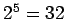

การสร้างเส้นทางข้อมูล (Datapath) ของโปรเซสเซอร์ MIPS เริ่มจากการศึกษาส่วนประกอบของเส้นทางข้อมูล ปรือเรียกว่า Data Elements สำหรับการทำงานของแต่ละคำสั่ง
ในรูป 5.8 แสดงส่วนประกอบของเส้นทางข้อมูลที่ประกอบด้วย Instruction Memory, Program Counter, และ ALU ในส่วนประกอบแรก Instruction Memory มีหน้าที่เก็บคำสั่งที่ประกอบกันเป็นโปรแกรม และให้คำสั่งออกมาที่เอาท์พุท เมื่อได้รับตำแหน่งของคำสั่งนั้นๆ Program Counter หรือ PC มีไว้สำหรับเก็บค่าแอดเดรสของคำสั่งปัจจุบันในการประมวลผล ในส่วนสุดท้ายเราต้องการ ALU สำหรับเพิ่มค่าแอดเดรสของคำสั่ง โดย ALU นี้ทำหน้าที่บวกอย่างเดียวและถูกเรียกว่า Adder
ในการประมวลผลคำสั่ง เราเริ่มจากการเรียก (Fetch) คำสั่งจาก Instruction Memory ออกมา และเตรียมตัวการเรียกคำสั่งต่อไป โดยการเพิ่มค่าแอดเดรสของ PC ขึ้น 4 รูป 5.9 แสดงการนำเอาส่วนประกอบต่างๆ ในรูป 5.8 มาต่อกันเพื่อทำการเรียกคำสั่งและเพิ่มค่าคำสั่งสำหรับวงรอบต่อไป
พิจารณาคำสั่งประเภท R-Type ตำสั่งในลักษณะนี้ต้องอ่านค่าจากรีจีสเตอร์สองตัว และทำการประมวลผลโดยใช้ ALU ตามฟังก์ชั่นฟิลด์ของคำสั่ง จากนั้นทำการเขียนผลลัพธ์กลับลงในรัจีสเตอร์ ตัวอย่างของคำสั่งเหล่านี้ได้แต่ add, sub, and, or, และ slt
โปรเซสเซอร์ MIPS มีรีจีสเตอร์ขนาด 32 บิต จำนวน 32 ตัวที่เก็บไว้ในส่วนประกอบที่ชื่อว่า Register File หรือ หรือ แฟ้มรีจีสเตอร์ โดยสามารถทำการอ่านหรือเขียนรีจีสเตอร์ที่กำหนด โดยในคำสั่งประเภท R-Type เราต้องการอ่านค่ารีจีสเตอร์สองตัว ดังนั้นจึงต้องการอินพุทสำหรับระบุรีจีสเตอร์ที่ต้องการอ่านสองตัว และเอาท์พุทแสดงค่าของรีจีสเตอร์สองตัวเช่นกัน ในการเขียนรีจีสเตอร์ เราต้องใช้อินพุทสำหรับระบุรีจีสเตอร์ และ อินพุทสำหรับข้อมูลที่ต้องกาารเขียน อีกทั้งสัญญาณที่อนุญาตให้เขียนในรีจีสเตอร์ ที่ต้อง assert ที่ขอบสัญญาณนาฬิกา การกำหนดค่ารีจีสเตอร์ที่ทำการอ่านหรือเขียนทำผ่านสายสัญญาณ 5 เส้น จาก  เพื่ออ้างอิงรีจีสเตอร์ 32 ตัว
รูป 5.10 แสดง Register File และ ALU ขนาด 32 บิต ALU 32 บิต มีอินพุตขนาด 32 บิตสองชุด และมีเอาท์พุทขนาด 32 บิตหนึ่งชุด และสัญญาณ Zero ที่ใช้ในการเปรียบเทียบ สัญญานควบคุม 4 บิตสำหรับการควบคุมการทำงานของ ALU ตามฟังก์ชั่นต่างๆ
สำหรับคำสั่งการถ่ายโอนข้อมูล จากหน่วยความจำ มายังรีจีสเตอร์ เช่น lw $t1, offset_value($t2) หรือ sw $t1, offset_value($t2) คำสั่งเหล่านี้จะทำการคำนวณแอดเดรสของหน่วยความจำข้อมูล (Data Memory) โดยการบวกค่า 16 บิต หลังของคำสั่งเข้ากับรีจีสเตอร์ฐาน (Base Register) ซึ่งการบวกค่าดังกล่าวใช้งาน ALU ในรูป 5.10 เช่นเดียวกัน
ในการบวกค่า Base Register และ Offset ดังกล่าว เราต้องการส่วนประกอบที่เรียกว่า Sign Extend ในการขยายเครื่องหมายของส่วน Offset ที่เป็นส่วนหนึ่งของคำสั่งที่มีขนาด 16 บิต โดยการทำการขยายให้ได้เท่ากับ 32 บิต เพื่อให้สามารถทำการบวกกับค่า 32 บิตของ Base Register ได้พอดี โดยรักษาความถูกต้องของเครื่องหมายไว้ด้วย รูป 5.11 แสดงส่วนประกอบทั้งสอง
คำสั่งประเภทที่สามที่พิจารณาคือคำสั่ง Branch คำสั่ง beq มีตัวกระทำสามตัว ได้แก่ ตำแหน่งของรีจีสเตอร์สองตัวเพื่อตรวจสอบความเท่ากัน และ Offset ขนาด 16 บิต ที่กำหนดตำแหน่งของคำสั่งที่จะทำต่อไป โดยการคำนวณ Branch Target Address จากตำแหน่งของ Program Counter คำสั่ง Branch อยู่ในรูปแบบ beq $t1, $t2, offset ในการคำนวณค่า Branch Target Address สามารถทำโดยการบวกค่า Offset เข้ากับ PC โดยต้องพิจารณาถึง
นอกจากการคำนวณ Branch Target Address แล้ว เราจะต้องเลือกว่าจะทำ Branch หรือไม่ ถ้าทำ Branchเรียกว่า Branch Taken ถ้าไม่ทำ Branch หรือ ทำคำสั่งต่อไปเรียกว่า Branch Not Taken โดยดูจากการทดสอบเงื่อนไขว่าเป็นจริงหรือไม่
ในเส้นทางข้อมูลของคำสั่ง Branch ทำการประมวลผลสองอย่าง ได้แก่ การคำนวณ Branch Target Address และการเปรียบเทียบค่ารีจีสเตอร์ว่าตรงตามเงื่อนไขหรือไม่ รูป 5.12 แสดงส่วนของเส้นทางสำหรับการประมวลคำสั่ง Branch โดยแยก Adder สำหรับคำนวณ Branch Target Address ออกมาจาก ALU และเพิ่ม Sign Extension และ Shift left เพื่อให้ได้ค่าของ Offset ที่ถูกต้อง ถ้าค่าเอาท์พุต Zero ของ ALU asserted หมายความว่าค่าในรีจีสเตอร์ทั้งสองมีค่าเท่ากัน
สำหรับคำสั่ง jump เราแทนที่ 28 บิตของ PC ด้วย 26 บิตหลังของคำสั่ง โดยการ Shift left 2 บิต